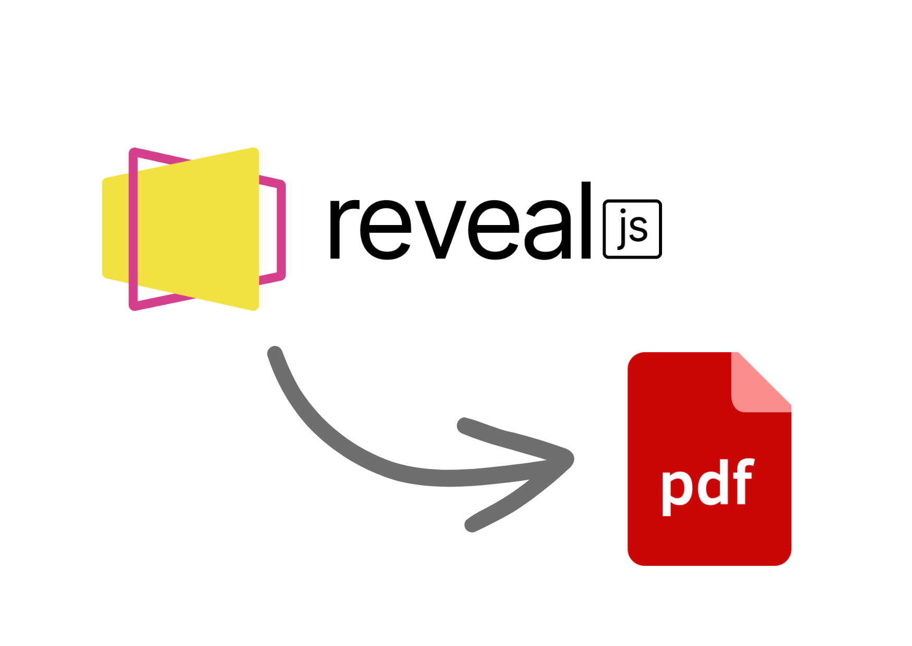
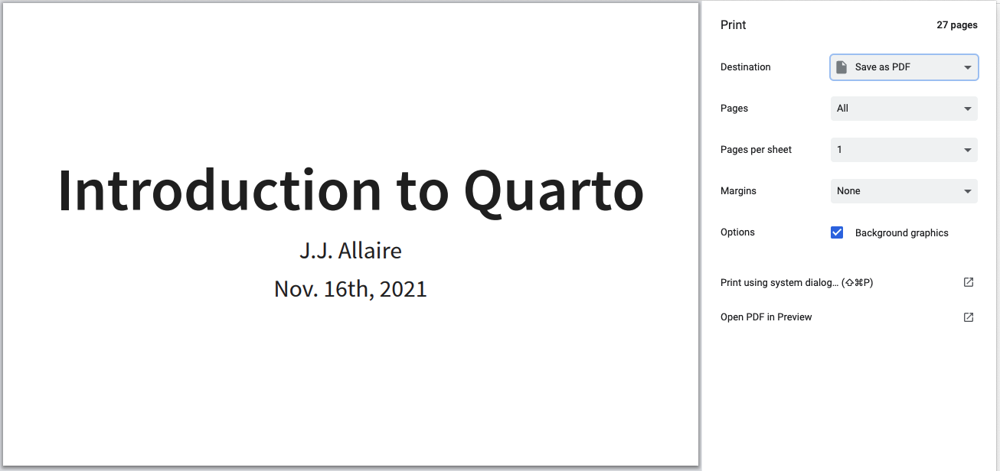
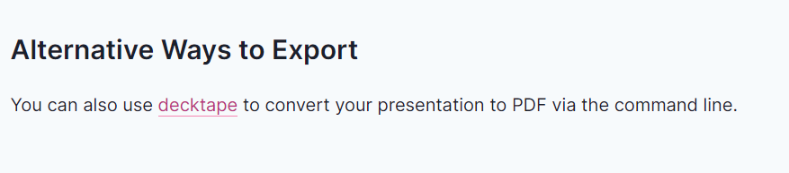

![]()
TL;DR
Install decktape and adapt this command to download your slides—which should be deployed on GitHub Pages—as PDF in your local machine:
decktape <slides-url> <slides-file>.pdf
An embarrasing confession
So it turns out one can download their RevealJS slides (in a HTML file) without using decktape, just by following the instructions in the Quarto documentation. In my defence, for whatever reason this did not work for me, whereas decktape did the job. I probably skipped a critical step.
I’m too lazy to re-orient or rewrite this post, so I’ll publish it any way. Read it as if it were the panicky reflections of a sleepless PhD student who got overconfident about their programming skills the night before their conference presentation. decktape might be still a convenient option to do the same job in a programmatic way, so there it goes.
Some context
Last week, I presented an oral communication at the International Symposium of Psycholinguistics. I feel comfortable using Quarto, and I had already given a couple of presentations generating slides from Quarto before, so I decided to take the next step and use Quarto for this one as well.
I chose RevealJS as the output format of my slides: it looks beautiful, you don’t need much knowledge of HTML or CSS to fix the layout of the slides, and it has a nice presenter view mode. In the end this is what my slides looked like:
I’m quite happy with how they look, so I even made a Quarto extension to apply this format to future presentations more conveniently.
The main inconvenience of RevealJS (or any HTML output format) is that presenting from a computer difference from the one in which you created the slides requires moving a whole folder, as opposed to just moving the .pptx or .pdf file to the new machine.
If one moves only the resulting index.html that contains the slides, the presentation will lose all of its nice formatting, and won’t show any images or additional resources. From previous (bad) experiences, I knew that this could be a problem, and given that I would certainly have to present from the conference room’s machine, I decided to use GitHub Pages1 to deploy my slides on a website.
1 Here is a nice tutorials on how to deploy your slides on GitHub Pages
My plan was to access the URL of the slides whenever I was about to present. But the day before the presentation, I started worrying about the internet not working and the conference venue at the wrong time I needed to export the slides to a PDF. A PDF never (well, rarely) fails.
The problem
Exporting Quarto slides to PDF is not as simple as just adding the pdf: default line to the YAML header of the file, under format:, like this:
format:
revealjs: default
pdf: defaultThis will render the slides as a PDF document, not as slides. Also, much of the nice formatting would be lost, as the .scss file that contained the styling only applies to HTML.
Quarto offers a PDF output format for slides, Beamer, which is pretty popular among LaTeX users. But again, generating the presentation in Beamer format would require re-doing the formatting from scratch, and doing so in LaTeX, which I’m not totally comfortable using. This was not an option. Neither it was to use the Power Point output format, as not only the format was lost, but also prevented any possibility of customising the layout of the slides.

From RevealJS to PDF: printing option in Chrome
I came across the Print to PDF section of the Presenting Slides article in the Quarto documentation:

Ctrl + P.Although this looked promising, the output of this method was not what I expected. The layout had been moved around a bit, and some formatting options were not preserved. I this presentation was aimed at my colleagues, it would have been ok-ish, but it was not for a conference presentation.
At this point I was already considering staying up all night re-doing the presentation in Power Point, and forgetting about Quarto for a while. In the last minute, when reading the RevealJS documentation, I found the suggestion of using decktape:

I was not very hopeful about this. decktape is written in JavaScript, which I’m not very familiar with, and I feared wasting too much time trying to make it work instead of just doing everything from scratch in Power Point. But it worked!. These are the steps I followed, according to the dektape docs.
npm install -g npmThen following the instructions in the decktape repository:
- Install decktape from the Node.js console:
npm install -g decktape- Finally, using the
decktapecommand to download my slides deployed on Github Pages as a PDF:
decktape https://gongcastro.github.io/ips_2023_trajectories slides.pdfAnd it did the job, preserving the layout, SCSS formatting, and even the links!
Reuse
Citation
BibTeX citation:
@online{garcia-castro2023,
author = {Garcia-Castro, Gonzalo},
title = {Using Decktape to Convert {Quarto} Slides from {RevealJS} to
{PDF}},
date = {2023-06-08},
langid = {en}
}
For attribution, please cite this work as:
Garcia-Castro, G. (2023, June 8). Using decktape to convert Quarto
slides from RevealJS to PDF.